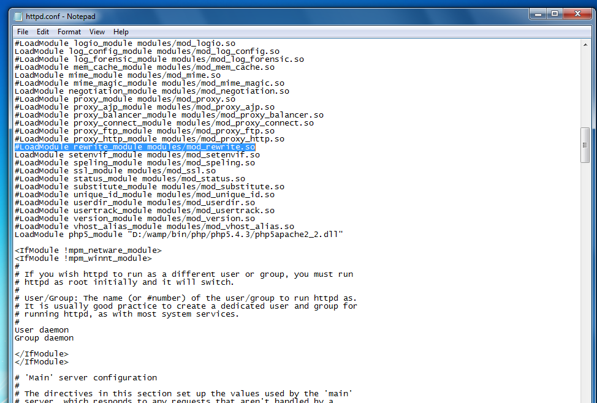

Perfex - Powerful Open Source CRM
The ony CRM you will ever need
- created: 02/27/2016
- latest update: 02/27/2016
- by: Marjan Stojanov
- email: info@perfexcrm.com
Welcome
Perfex Documentation
Website: www.perfexcrm.com
Full Documentation
Support Desk
System Requirements
- PHP 5.4+
- MYSQL 5.1+
- mod_rewrite Apache
- Mcrypt Extension
- MBString Extension
- GD Extension
- MYSQLi Extension
- PDO Extension
- OpenSSL Extension
- Zip Extension
- CURL Extension (Recomended)
In most hosting accounts these extensions are enabled by default. But you should check with your hosting provider.
Installation
Perfex come with a simple automatic installation.
Configure database connection
You need to have previously setup database from the cPanel.
Here is a good tutorial how to setup MySQL database in cPanel if you are not familiar with this.
- Login to cPanel by accessing www.yourdomain.com/cpanel and navigate go MySQL Databases.
- Create database first.
- Create user and setup your password.
- Add the user to database by selecting the database and the username.
Make sure you have checked All privileged when adding the user to database.
Install
Upload the files to your hosting folder and navigate to your base url http://yourdomain.com/install
You will need to pass the requirements in order to install Perfex CRM.
Click Setup Database and populate the fields according to your database
setup.
If any erros found while connecting you will be notified otherwise you should see the credentials screen
Enter admin email and password
If you need help installing dont hesitate to open support ticket
After successful installation you need to setup first things to have all functionalities included right. Perfex come with some predefined data but you need still to setup some things up :)
Local Server Installation
WAMP
Even if you are trying to install Perfex on WAMP you must meet all the
requirements.
WAMP by default comes with mod_rewrite disabled.
To Enable .htaccess in WAMP Server use the following steps
STEP 1: click on Wampserver and select
apache->httpd.conf
STEP 2: Find and replace the following
text
Find #LoadModule rewrite_module
modules/mod_rewrite.so
Replace LoadModule
rewrite_module modules/mod_rewrite.so

STEP 3: Restart Wamp Server
XAMP
Perfex CRM is not using any online resources except the business news which is located on the top header menu on the right side, but you can install it on XAMPP server without any problems. Everything will work good except if no internet connection you wont be able to send emails.
Few changes we need to do in XAMPP default installation.
1. Change the .htaccess
RewriteRule ^(.*)$ index.php?/$1 [L,QSA]to
RewriteRule ^(.*)$ /yourfolder/index.php?/$1 [L,QSA]
2. Enable the fileinfo and IMAP extension manually (enable them in php.ini and restart apache).
Try to install.
Setup
Cron Job
You will need to setup the cron job controller for Perfex
Cron job will be used for sending survey emails, auto update invoice statuse ex. if the invoice is overdue etc.
How to setup Cron Job?
Login to your cPanel and navigate to Cron jobs
Add the following settings :

wget -q -O- http://perfexcrm.com/demo/cron/index
Change the url according to your base url where Perfex CRM is located. You can check your cron url in Setup->Settings->Cron Job
Example if its on root domain you need to type only
http://yourdomain.com/cron/index
If its on subfolder /crm you will need to type
http://yourdomain.com/crm/cron/index
Do not forget the wget command in front.
Cron is required to be setup for Perfex CRM
General Email
Navigate to Settings Menu -> Settings -> Email and setup your SMTP email, this will be your base email. You need to setup previously email account from your cPanel account.
Default Timezone
Setup your timezone, not reccomended changing this later. This option is located in Settings-> General
Setup roles
Go to Settings Menu -> Settings -> Roles and add the required staff roles
By default there will be 1 role employee. You only need to add permissions for this role.
Departments
Setup your departments by going to Settings Menu -> Departments
Email Templates
Check all the email templates, setup signature also in Settings Menu -> Settings -> Email this signature will be using on all email representing your company
Date Format
Setup your desired date format, will be using all over the application. This option is located in Settings-> Localization
Sales
This option is located in Settings->Sales
Set invoice prefix, your company info on invoice, decimal separator etc..
That's it. You are good to go
FAQ
Installing on subdomain
If you are facing 404 problems on subdomain make sure that you have mod_rewrite enabled and replace the main .htaccess file with one of the following where the CRM in htaccess 2,3 is your subdomain name. In most cases the first htaccess should work.
Try .htaccess 1
RewriteEngine on
RewriteBase /
RewriteCond $1 !^(index\.php|resources|robots\.txt)
RewriteCond %{REQUEST_FILENAME} !-f
RewriteCond %{REQUEST_FILENAME} !-d
RewriteRule ^(.*)$ index.php/$1 [L,QSA]
AddDefaultCharset utf-8
Try .htaccess 2
RewriteEngine on
RewriteBase /
RewriteCond $1 !^(index\.php|resources|robots\.txt)
RewriteCond %{REQUEST_FILENAME} !-f
RewriteCond %{REQUEST_FILENAME} !-d
RewriteRule ^(.*)$ crm/index.php/$1 [L,QSA]
AddDefaultCharset utf-8
Try .htaccess 3
RewriteEngine on
RewriteCond $1 !^(index\.php|resources|robots\.txt)
RewriteCond %{REQUEST_FILENAME} !-f
RewriteCond %{REQUEST_FILENAME} !-d
RewriteRule ^(.*)$ crm/index.php/$1 [L,QSA]
AddDefaultCharset utf-8
Why i'm getting file too long when copy/extract the files in my desktop?
This is not an issue, feel free to check Do this for all files and skip copying the files. You wont encounter any problems while using Perfex. This is from the node_modules.
Translating Perfex CRM
You can translate Perfex CRM very easy. Follow the documentation instructions and translate in your own language.
If you plan to to edit the default english file you will need to copy the
default and rename the folder to ex. my_english and the file
english_lang.php to my_english_lang.php.
Becuase when updateing to newer version the english file is always
replaced with the one from the update.
How to check which version i'm using?
To check your version navigate to application/helpers/perfex_constants_helper.php and find define('PERFEX_VERSION');
Update
Update Notes:
If you have purchased Perfex CRM and new version is available you will need to upgrade your current version. To get all the new features and fixes if any. The upgrade is pretty simple just follow the steps below and you'll have the newest version of Perfex.
Check the changelog on http://www.perfexcrm.com/doc/change-log/ if you are using your own theme for the customers area. To make sure that there is no changes in the original theme. If any changes there will be mentioned in the first list item from the changelog.
Always backup your files and database before making an upgrade
- Download the newest version from CodeCanyon.
- Delete the application/controllers/install folder. (You dont need this folder, used only for install)
- Delete application/config/database.php
- Delete application/config/config.php
- Delete application/helpers/my_functions_helper.php
- Delete assets/css/custom.css
- Create backup to any files you have made changes
Overwrite the following folders:
- /application
- /bower_components
- /assets
After overwriting the files navigate to application/config/migration.php and find:
$config['migration_enabled'] = false;
set it to
$config['migration_enabled'] = true;
After that go to yourdomain.com/update (or where Perfex is installed) and if upgrade is successfuly a message will be shown that your database is up to date.
If you are using your own language make sure to copy all the strings below the last # Version comment from the main english.php file.
Set $config['migration_enabled'] to false;
Login the the admin area and check if everything is okey. Clear the cache if any changes are made in JS files and CSS.
If you experience any trouble while updating, open support ticket and i will be happy to assist you.